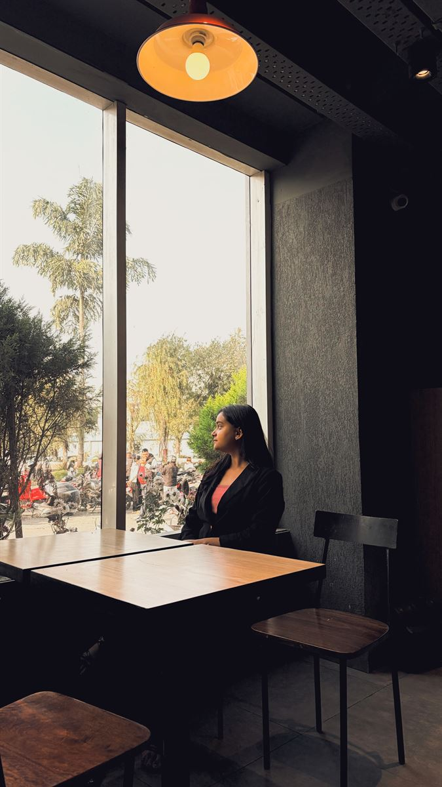

hi, I'm Prarthana
coffee, books, and other people's stories
This is my corner of the internet — a cozy scrapbook of whatever I'm thinking, reading, and half-in-love-with. You're welcome to wander around; Nox will keep you company.
wander around → replay the welcome
that's me ✦
pull up a chair
Little rooms to wander into. Each one has its own colour — same cozy house, different doors.
— Nox, your guide